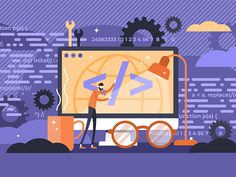
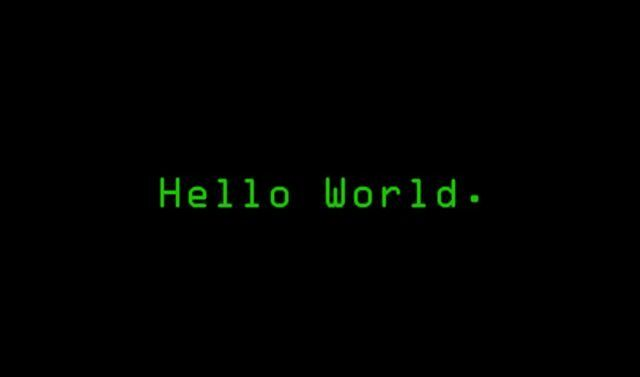

Conocimiento en...
- Comenze conociendo el mundo de Python
- Luego, conocí HTML,CSS
- Para una mejor dinamica JS
- Y para que sea mas interectivo PHP
- Tambien, conodi de MySQL relacionado con BD

Mi experiencia
-
Al principio fue impactante por todo la tecnología códigos, el contenido, cosa que fue muy abrumador, luego mientras conocia de ello, su teoria, me iba adaptando cosa que fue dificil pero nada imposible, hasta ahora conoci mucho de mi carrera y sin duda me sirve de mucho y hay temas que son mood explosión pero ahi vamos...